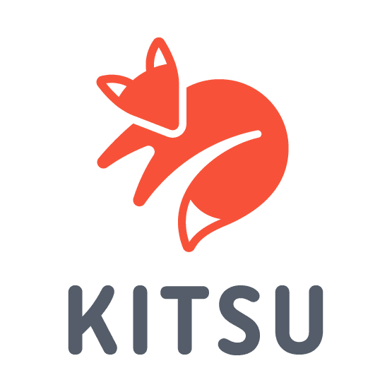

<div class="contenido_del_footer">
    <section class="layout-footer">
        <div class="p1-description">
            <h3 class="titulo-footer">Descripción</h3>
            <p>
                Ukianime se encarga de brindarte los mejores anime con un servicio de calidad, en el cual no tendrás
                problemas para encontrar los mejores animes.
            </p>
        </div>

        <div class="p2-paginas">
            <h3 class="titulo-footer">Paginas</h3>
            <div class="lista-paginas">
                <div>
                    <a routerLink="/">Inicio</a>
                    <hr />
                </div>

                <div>
                    <a routerLink="browse">Browse</a>
                    <hr />
                </div>

                <div>
                    <a routerLink="nosotros">Nosotros</a>
                    <hr />
                </div>

                <div>
                    <a routerLink="tecnologias">Tecnologías</a>
                </div>
            </div>
        </div>

        <div class="p3-creadores">
            <h3 class="titulo-footer">Información proporcionada por:</h3>

            <div class="kitsu">
                

                <ul>
                    <li>
                        <span>Web: https://kitsu.io/explore/anime </span>
                    </li>
                    <li>
                        <span>API: https://kitsu.docs.apiary.io/ </span>
                    </li>
                </ul>
            </div>
        </div>
    </section>
</div>

<div class="barra">
    <div class="contenidoBarra">
        <h2>Repositorio: https://github.com/erandreex/ukianime</h2>
    </div>
</div>

<div *ngIf="auth" class="espacio"></div>
